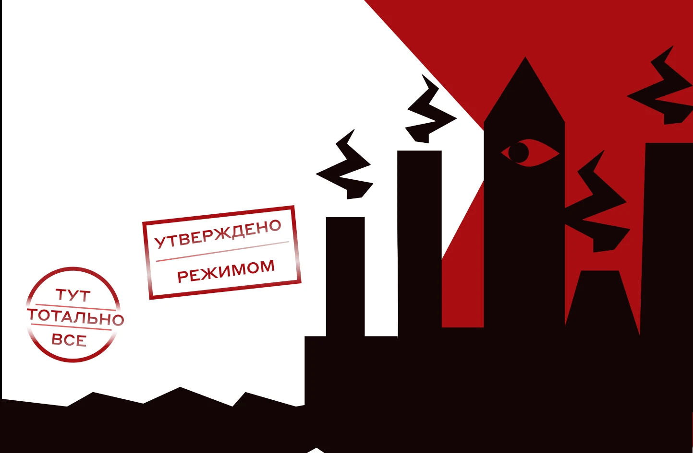
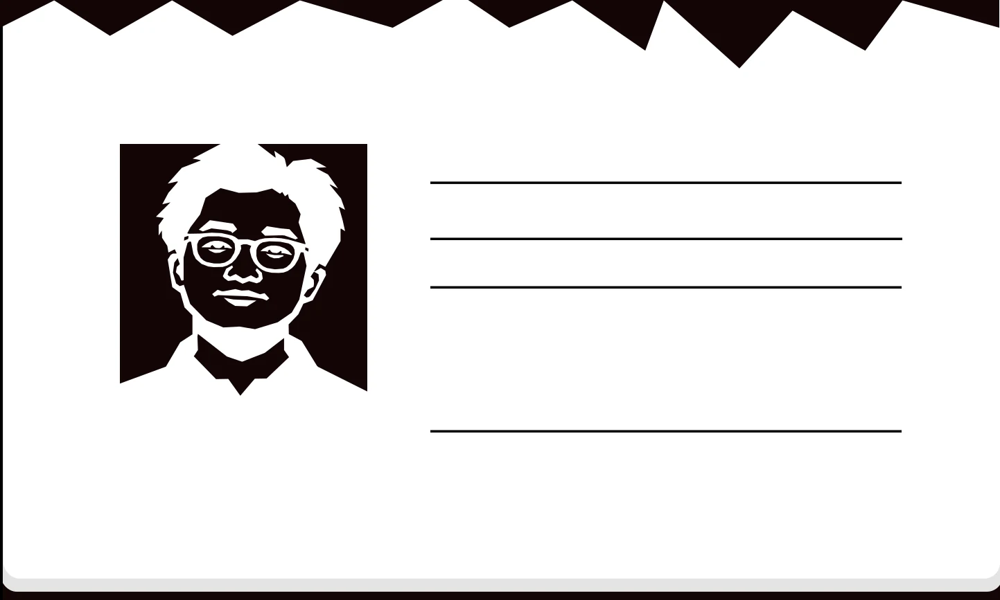
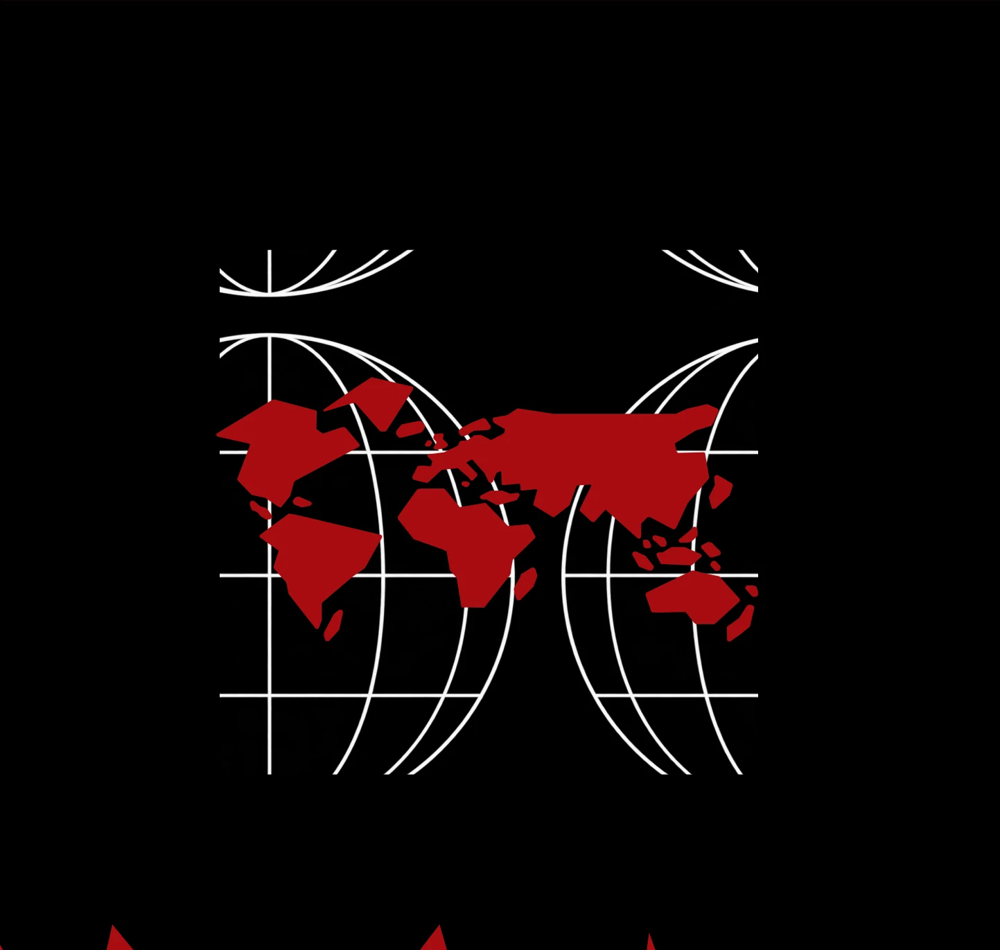
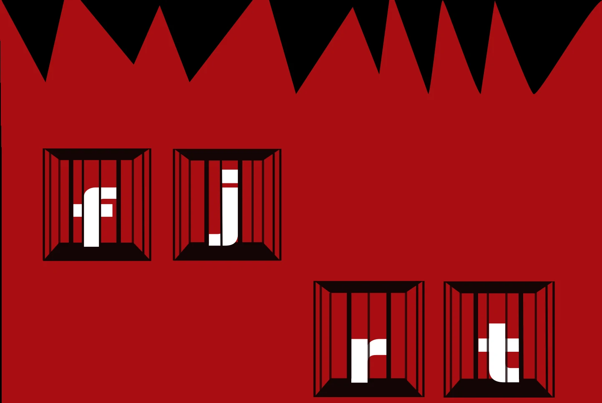
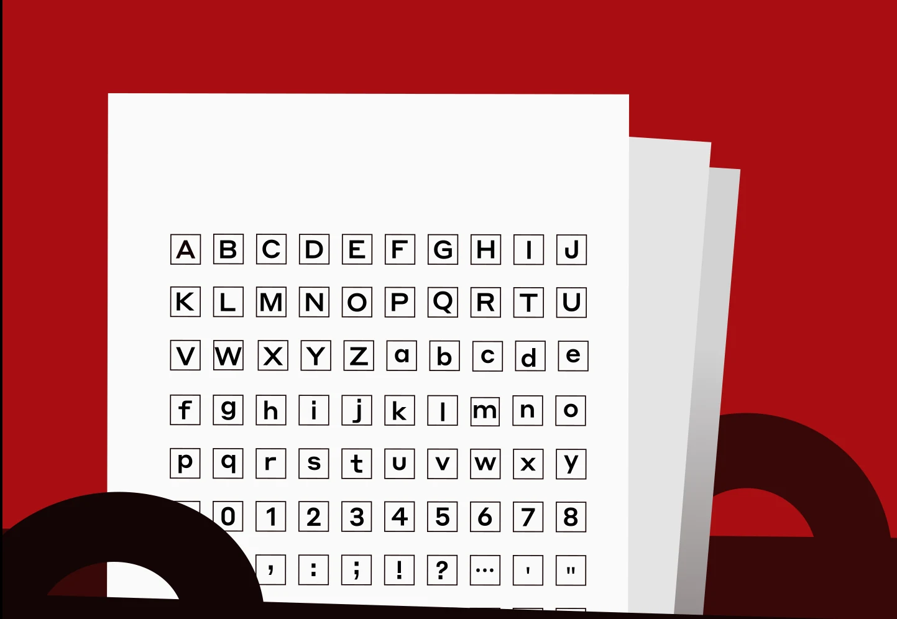
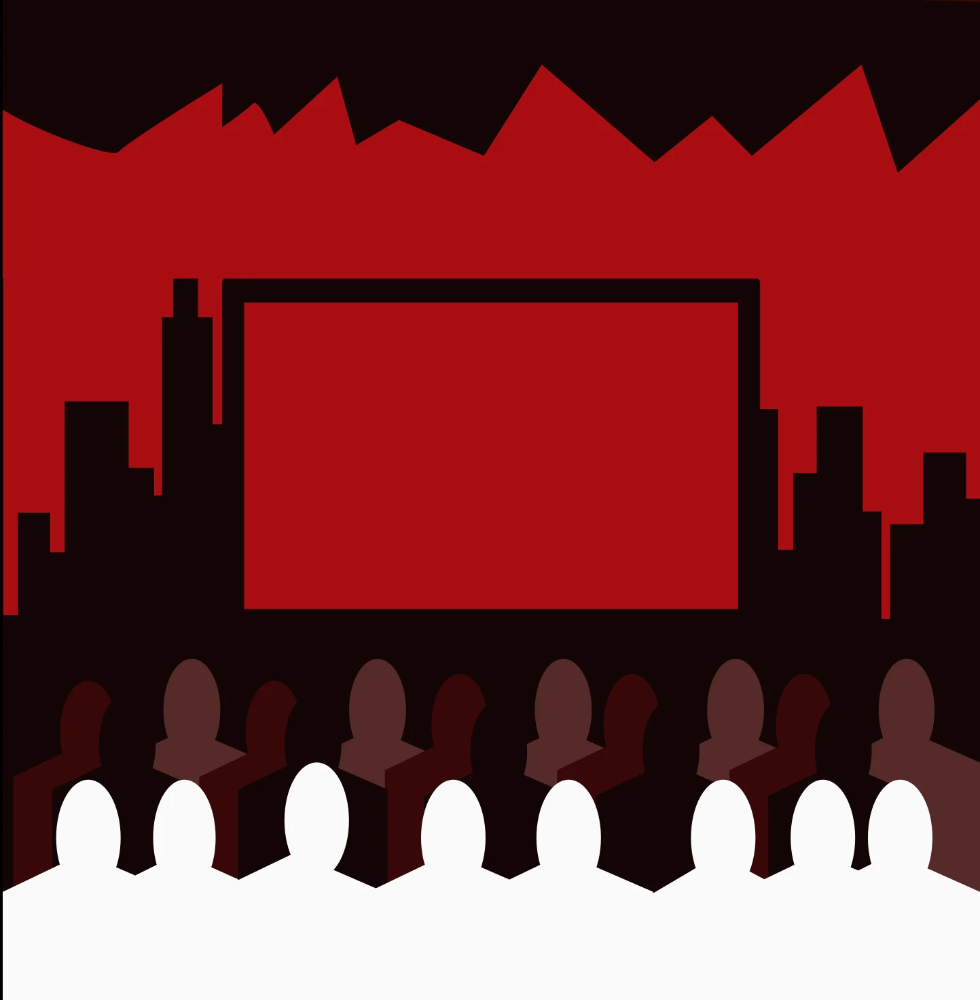

Генезис:
В основу заложена ДНК голландского шрифта начала XX века Breede Schreeflooze. Шрифт назван в честь стирола — сырья, используемого для производства полистирола и других полимеров.
ЭЛЕКТРОННЫЙ ПАСПОРТ
ШРИФТА ДЛЯ АНТИУТОПИИ

Год релиза:
2016
Разработчик:
Commercial Type
Автор кириллического контура:
Илья Рудерман
Генезис:
В основу заложена ДНК голландского шрифта начала XX века Breede Schreeflooze. Шрифт назван в честь стирола — сырья, используемого для производства полистирола и других полимеров.

начертаний
(от Thin до Black)
языков официально
поддерживается

Даже в самой строгой системе находятся те, кто нарушает правила. В Styrene A такими бунтарями становятся буквы f, j, r и t.
Их горизонтальные элементы непривычно вытянуты, а пропорции противоречат традиционной конструкции гротесков.
Они занимают больше пространства, чем от них ожидают, нарушая привычный ритм набора. За необычные пропорции глифы оказались под стражей.


Styrene A — геометрический гротеск с чёткими линиями, крупными формами и строгим характером.
Его особенности хорошо подходят для эстетики антиутопии, где шрифт используется в государственных объявлениях, предупреждениях, паспортах граждан и других официальных документах.
